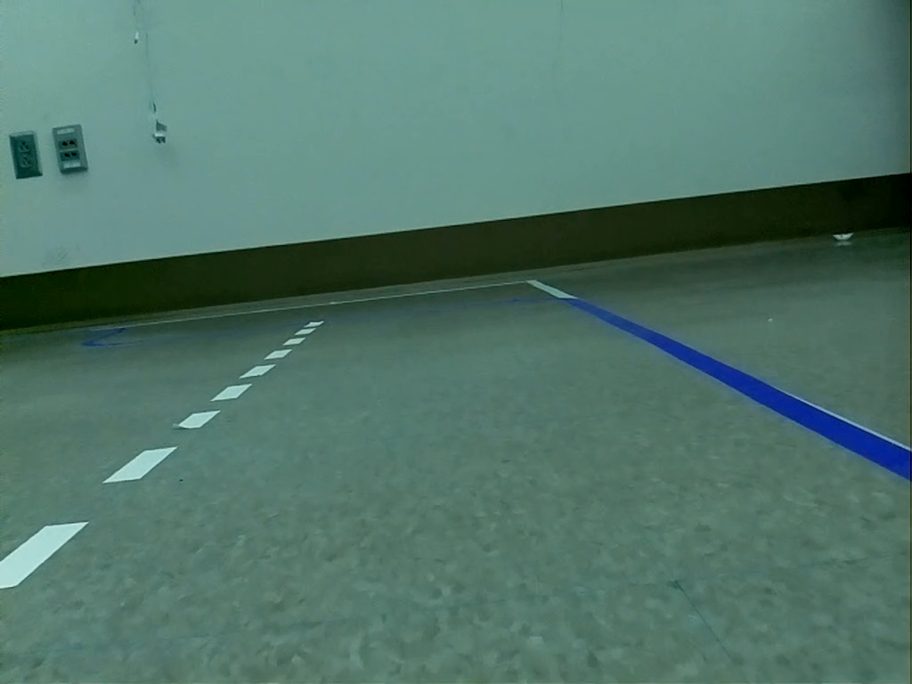
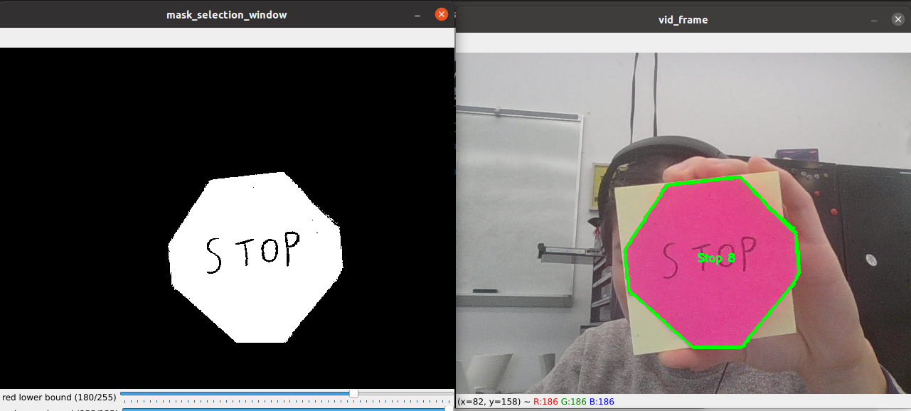

PROJECT STORY 2
Current Project Progress
Lane Following (Jackie)
We wanted our robot to be able to traverse portions of the map autonomously, and to do this we needed to implement lane following. We decided to go for a vision based approach and rely solely on camera data for this component.
A critical part of lane following is accurately detecting the lane lines. I first used canny edge detection to find all edges in the image (Image 1). Then, I created a polygon mask segmenting off the portion of the image that is the approximate road region to filter for all edges that may be a lane line (Image 2). I then split the detected edges into 3 groups based on their location in the screen: left lane, right lane, and horizontal line (Image 3). Using hough line transformation, I took the average of each edge group and calculated the line equations for each group (Image 4). We’ll be using the left and right lane to determine whether we’re driving centered in the lane. The horizontal line will inform us whether we’re approaching a dead end on the map and whether we need to make a 90 degree turn.
Now that we have detected the left and right lanes, we can determine whether the robot is centered in the lane. To do this, I calculated the intersection point of the two lanes (Image 5). In order for the robot to maintain a straight heading, the x coordinate of the intersection point should remain in the center region of the frame. If the intersection point is too far left, the robot is leaning right and needs to adjust leftward. Vice versa, if the intersection point is to the right, the robot needs to adjust rightward.
What we have right now allows us to follow a straight lane accurately. However, what if the robot is faced with a dead end or needs to turn? This is where the horizontal lane detection comes into play. If the horizontal line is below a certain x threshold, it means that the Neato is approaching it. (Image 6) At this point, the neato will need to make a decision on whether to turn left and right.
Obstacle Avoidance (Simrun)
Our first major decision was thinking about how we wanted the obstacle avoidance behavior to work. We decided that we would place the obstacles on the two-lane parts of the track and then have the NEATO change to the other lane to avoid obstacles. Once we made that decision, lane changing became a big chunk of the overall obstacle avoidance behavior.
To detect obstacles, I used the NEATO lidar data. As I only want to look at obstacles that are in front of the NEATO, I check the angles in front of the NEATO from -15 to 15. I checked to see if there were at least 10 points detected that are closer than 0.5m to say that there is an obstacle.
Once an obstacle was detected, the next step was to figure out if the NEATO is in the left lane or right lane. I decided to do this by looking at the slope of the lane divider. If the slope of the line was positive, it meant the NEATO was in the right lane and vice versa for the left lane.

Left lane

Right lane
One major decision I made here was deciding how to filter the lane divider rectangles. Initially, I thought I could do it by the size and position on the picture but that proved to be fairly challenging as there was a lot of noise that was challenging to account for. I pivoted to using color masking instead to find the lane divider which worked successfully. Once the lane divider was isolated, I found the centroids of each rectangle and found the slope of all those points.
The last step was to actually move the NEATO into the other lane. I opted to use a simple method in order to do this by telling the NEATO to turn 90 degrees, drive half a meter and then turn 90 degrees in the opposite direction. I used the NEATO's odometry in order to control this movement.
Sign Detection (Melody)
The first major design decision I made while working on sign detection behavior was choosing to use color masking and polygon shape estimation. I chose this method of sign detection mainly because the alternative would be to train a neural network on a dataset of road signs so that it can pick up patterns and be able to classify a road sign that is not in the dataset. This was much too complicated for the scope of our project!
Now that I had picked this method of sign detection that relies on polygon classification, I had to make sure the signs that we would be using on the track had unique shapes. The signs shown in the photos below are the ones that we chose to include in the MVP of our project: Yield, recognized as a triangle, Traffic Light Ahead, as a square, and Stop, as a hexagon. The images show the detected outline of the sign, how many polygon corners it recognizes and what the resulting traffic sign is.

Stop sign

Traffic light sign
Yield sign
How this interfaces with the broader road navigation project determines the Neato’s driving behavior at intersections where a traffic sign is detected. If the Neato spots a Yield or Stop sign, the Neato should come to a stop at the next intersection, check that there are no passing cars or pedestrians, and then keep going on its planned path. If the Neato spots a Traffic Light Ahead sign, it should enter traffic signal detection mode which uses color masking to detect when it’s red, yellow, or green light. If it’s a red light or yellow light, the Neato should stop at the next intersection and wait for the signal to turn green before continuing. If it’s a green light, the Neato should keep on driving along its planned path.
Path planning (Annabelle)
Our first major decision about path planning was what our goal should be. Due to our grid being quite small we didn’t want to just find the shortest distance from Point A to Point B. However, solving the traveling salesman problem was more complex than we wanted to tackle. We settled for something in between, where we will hand the robot a list of nodes to visit. It will calculate the shortest path from the first point to the second point, then from the second point to the third point, and so on. In this way we can visit multiple nodes, allowing our robot to travel around the grid and solidly test its other functionality while also not having to tackle the traveling salesman problem.
We decided to use the A* algorithm to plan the path from point to point. The A* algorithm is a more efficient version of Dijkstra’s algorithm, which is a common shortest path algorithm. Dijkstra’s algorithm requires calculating the distance from the start node to every other node. In some implementations it stops once it reaches the end node, but it does not prioritize any node over any other node. The A* algorithm, however, calculates only the shortest path from the start node to the end, and uses some kind of metric to determine which nodes are the most likely. The metric we used was the Euclidean distance from a node to the goal.
In the image below, if we start at the red node at (0, 0), we would then process all the adjacent nodes. If we’ve seen any of them before, we move on. Otherwise, we calculate the Euclidean distance from each node to the end (green) node at (7, 3) and store that. For each of the three adjacent nodes from (0, 0) the Euclidean distance is just sqrt(x2 + y2). This will be smallest for the node at (1, 1), so that’s the node we move to next. We then repeat this process until we get to the end node.
Image source: Geeks for Geeks
I have currently implemented this algorithm so that, given a start and end point, it generates a list of the nodes the robot should traverse. Next, I need to convert those into instructions for the robot.